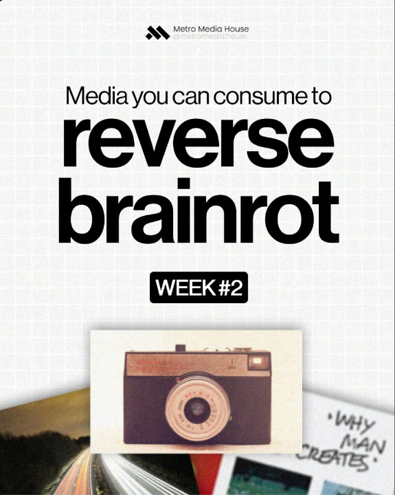
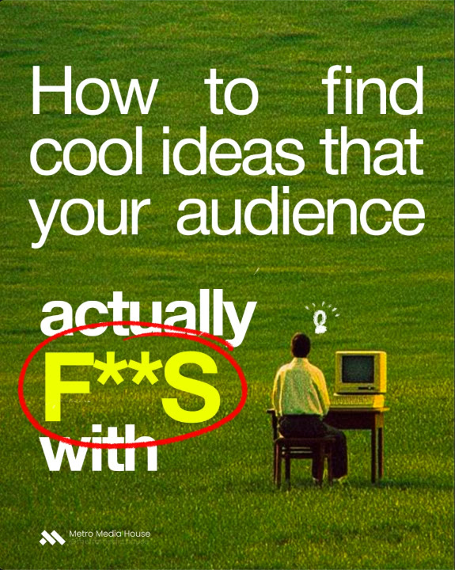

What I did
- Built how we find clientsCo-created the agency's lead generation channels, the ways new clients found us.
- Built how we deliverCo-created the systems the agency used to deliver work to its clients.
- Led content for big namesContent strategy and production for Steven Bartlett, Andrew Ross Sorkin and Dr Arthur Brooks.
- Led a team of 30+A cross-functional team of creatives, making work across many formats and platforms.
- Wrote the playbookThe workflows and production guidelines the whole team worked from.
- Made it 90% cheaperSet up AI-assisted production that cut production overhead by more than 90%.
- Wrote and directed our own postsThe agency's own reels and carousels, including the ones below.
And yes, I made a post about fixing brainrot. I may have had a little brainrot while making it.
What happened
90%+less production overhead
293Kplays on the three reels below
2,059people commented on two posts to get our reading list
29Klikes across all seven pieces
Our own posts
Tap for sound
When your product becomes part of the flex, you've already won.
192K plays, 9.9K likesInstagram
Five pieces of media that'll reverse your brainrot, part two.
6.7K likes, 904 commentsInstagramTap for sound
One announcement. Zero marketing. Forty years of legacy.
29.5K plays, 1.7K likesInstagram
Cool isn't a look. It's a behaviour people repeat before anyone names it.
1.3K likesInstagramTap any reel for sound. Plays and likes as Instagram showed them on 20 Nov 2026.
Next fileCV